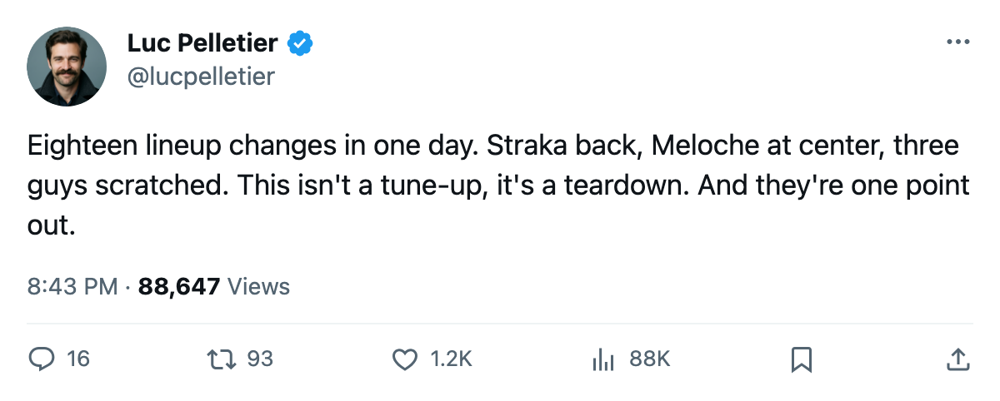
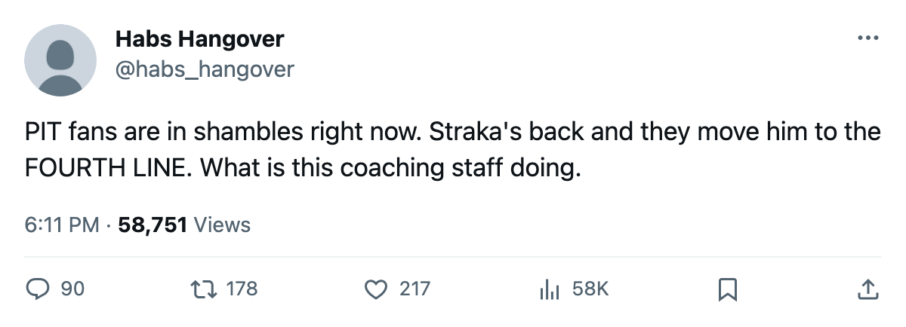

Morning Skate Notes: Pittsburgh moves 18 players ahead of Los Angeles
Three in, three out, a Calder winner at centre. The Penguins rebuilt the lineup for tomorrow.
 Luc PelletierMontreal correspondent · Home Ice Network
Luc PelletierMontreal correspondent · Home Ice Network
The  Pittsburgh Penguins changed 18 of their 20 dressed players ahead of tomorrow's home game against
Pittsburgh Penguins changed 18 of their 20 dressed players ahead of tomorrow's home game against  Los Angeles Kings. Three enter the lineup, three sit out, and twelve shifted lines, pairings, or positions.
Los Angeles Kings. Three enter the lineup, three sit out, and twelve shifted lines, pairings, or positions.
 Martin Straka86 returns after a wrist injury and slots in at fourth-line centre. Brian Holzinger77 enters on the third line. Tomas Surovy75 takes a wing on the bottom unit.
Martin Straka86 returns after a wrist injury and slots in at fourth-line centre. Brian Holzinger77 enters on the third line. Tomas Surovy75 takes a wing on the bottom unit.  Guillaume Lefebvre76,
Guillaume Lefebvre76,  Steve McKenna69, and
Steve McKenna69, and  Mike Eastwood70 are scratched.
Mike Eastwood70 are scratched.
Eric Meloche78, last season's Calder Trophy winner, moves from the top line's right wing to centre.  Aleksey Morozov79 shifts from left wing to the fourth centre spot.
Aleksey Morozov79 shifts from left wing to the fourth centre spot.  Kelly Buchberger74 drops from the third line to the fourth. Rico Fata74 rises from fourth-line centre to the third wing.
Kelly Buchberger74 drops from the third line to the fourth. Rico Fata74 rises from fourth-line centre to the third wing.
On defence,  Michal Rozsival77 switches from left to right on the top pairing,
Michal Rozsival77 switches from left to right on the top pairing,  Richard Lintner74 moves from top-pair right to second-pair left,
Richard Lintner74 moves from top-pair right to second-pair left,  Jamie Pushor68 flips to the left side of the third pairing, and
Jamie Pushor68 flips to the left side of the third pairing, and  Shane Hnidy67 takes the third-pair right.
Shane Hnidy67 takes the third-pair right.
The reason: five clubs chasing one playoff spot
 Mikael Renberg78 drops from the first line to the second.
Mikael Renberg78 drops from the first line to the second.  Shane Willis75 rises from the second to the third.
Shane Willis75 rises from the second to the third.  Vitali Yachmenev77 slides from the second wing to the third.
Vitali Yachmenev77 slides from the second wing to the third.  Milan Kraft70 loses a spot in the lineup entirely.
Milan Kraft70 loses a spot in the lineup entirely.
Pittsburgh sits 13th in the East at 60 points. One point separates them from 8th-place  Buffalo Sabres and 61 points. Five clubs share that 60-point mark: Pittsburgh, New York Islanders, Atlanta, Ottawa, and Philadelphia.
Buffalo Sabres and 61 points. Five clubs share that 60-point mark: Pittsburgh, New York Islanders, Atlanta, Ottawa, and Philadelphia.
The Penguins have carried 40 injury spells and 510 days lost this season. Straka's wrist had him out; Lefebvre's foot, designated between February 21 and 23, keeps him out until May 15. He was in the lineup before that designation and now carries a second injury on his season.
Pittsburgh beat San Jose 3-2 on February 22, ending a two-game losing stretch. The win brought the Penguins level with the five-club pack chasing Buffalo.
Los Angeles enters with 2 straight wins and 60 points, 10th in the West. Their goaltender  Roman Cechmanek91 has started 49 of 61 games (80%). Pittsburgh's
Roman Cechmanek91 has started 49 of 61 games (80%). Pittsburgh's  Johan Hedberg86 has gone 45 of 61 (74%), and tonight's starter has not yet been named.
Johan Hedberg86 has gone 45 of 61 (74%), and tonight's starter has not yet been named.

